Langkofel North Ridge
- North Ridge (5.6, 20+ pitches)
- August, 2002
The Sassolungo is the longest climb in our guidebook about the Italian Dolomites. It climbs 3000 feet directly from meadows to the summit. The descent is long, complex and intimidating. The weather was intimidating too - threatening to storm and then following through! The flying buttresses, vertical towers and deep chasms give the peak a faery-tale look. Steve and I had seen it from the Sella Pass a year before, and a great desire to climb it gripped me.
I hoped to climb the route with Mat Richter, our friend who lived in Garmisch, Germany. He is a really strong and experienced climber, and I looked forward to finally doing a climb with him. We worked it out that he would drive down either on our first or second Saturday in Italy. I had to keep an eye on the weather, and scout out the approach to save time on the morning of the climb.
Late Thursday afternoon, shortly after Kris, Christos and I arrived in Val Gardena, I hiked up the approach trail. It went through an amazing bouldering garden. I got my heart pumping by soloing a 40 foot high “5.5” line, then climbing back down. I knew that our success would depend on simulclimbing at least half of the route, and the tension I experienced on that little test-piece made me worry about the future. But perhaps the water is cold until you swim around a while!
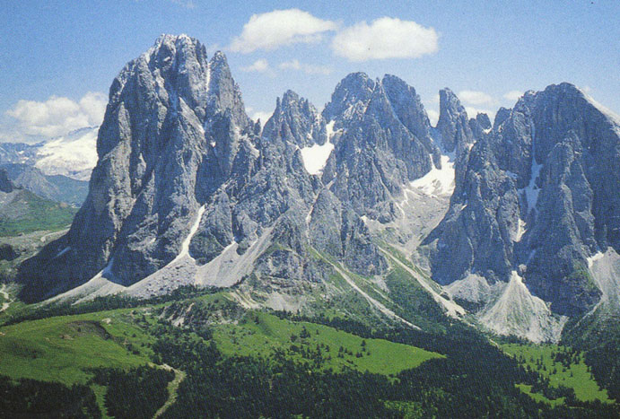
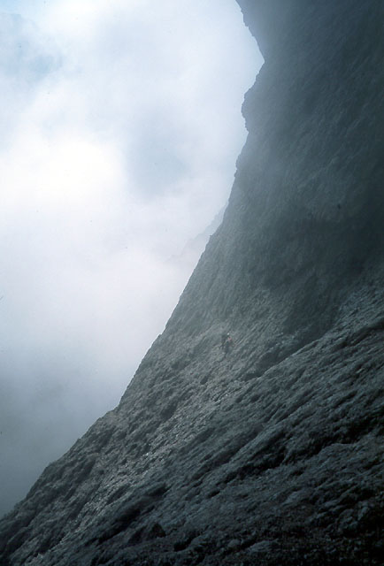
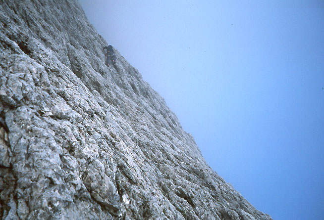
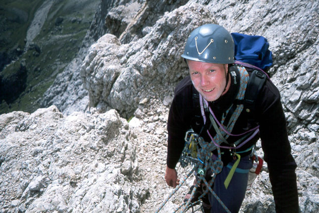
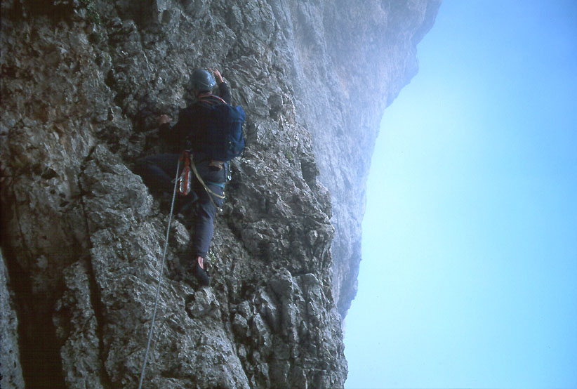
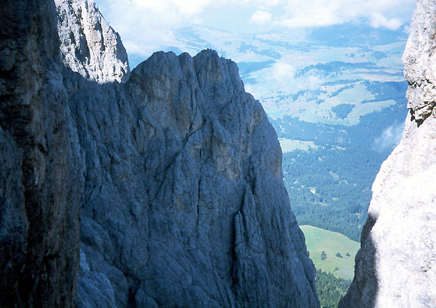
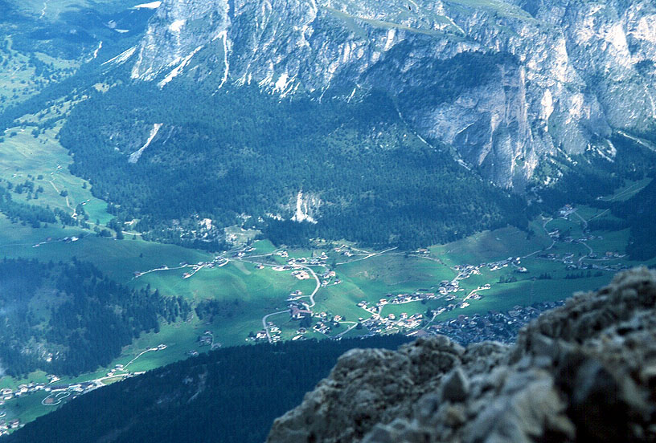
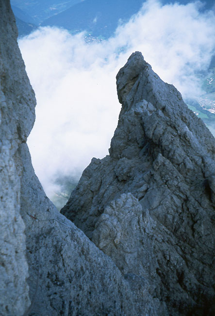
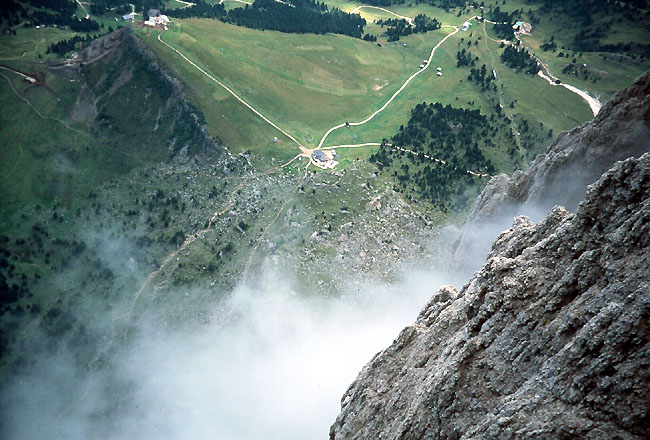
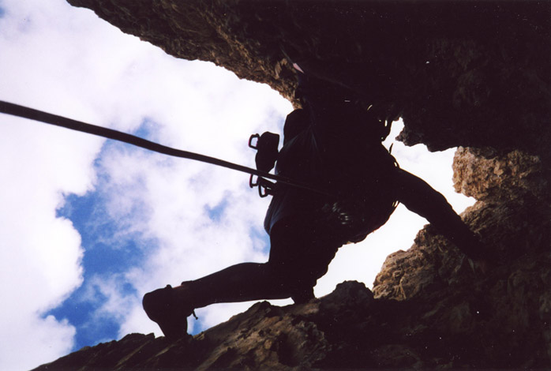
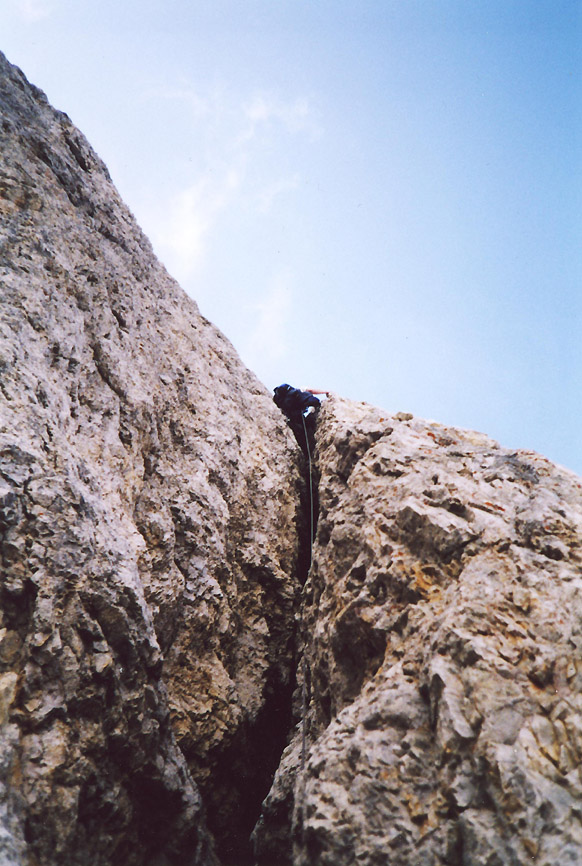
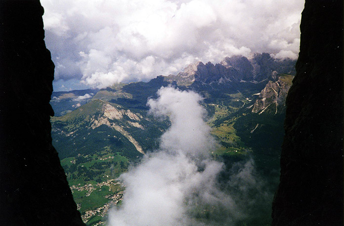
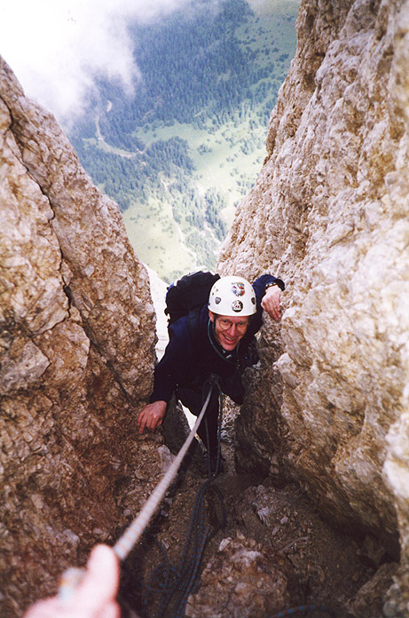
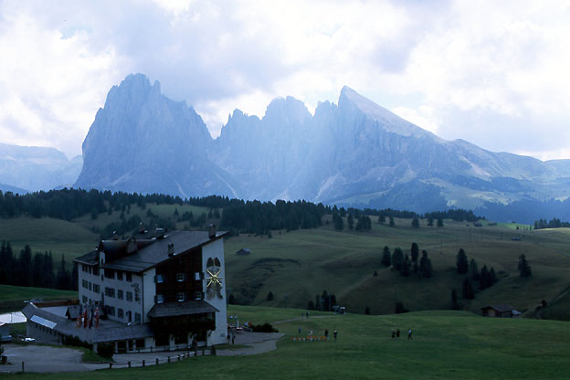
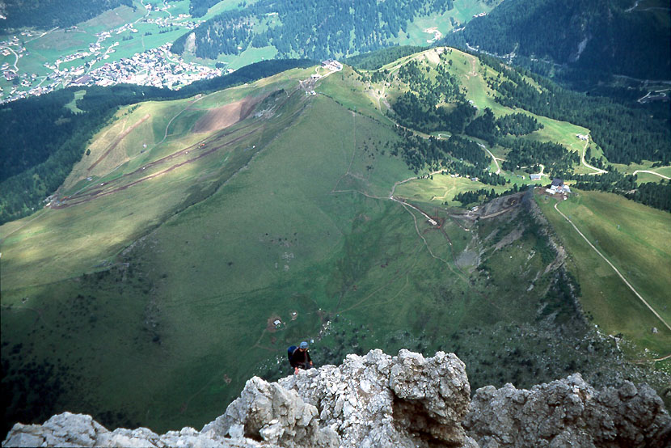
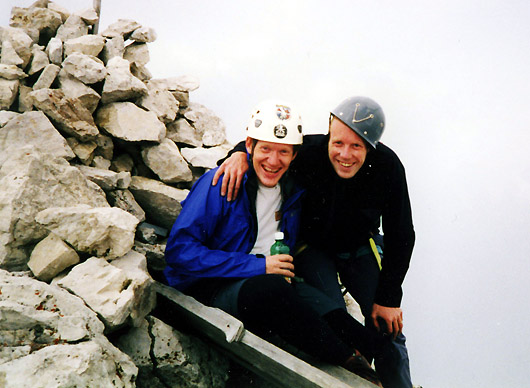
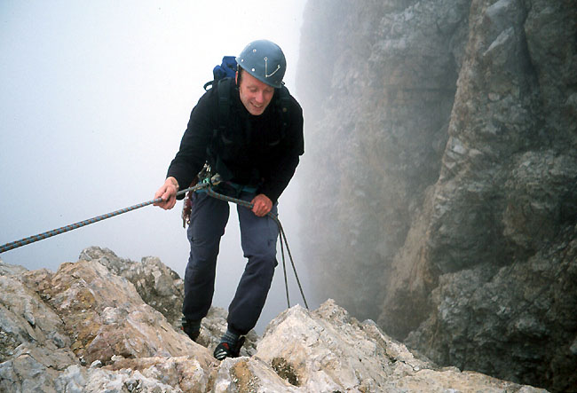
I left the Klettergarten and hiked a road through meadows, tripping occasionally because I kept looking up at the mountain, wondering where our route went. It was kind of hard to tell from the single black and white picture in the guidebook. I left the road and crossed a steep meadow to a broad saddle below the North Ridge. It was getting dark, so I didn’t go right up to the base, but was able to identify the start, which was kind of vague.
The three of us sat out in the moonlight that night, talking about things and looking at the huge bulk of the mountain. I had a very lonely feeling, thinking about what it would be like to climb it in just two days.
Friday was a nice day, and Kris and I spent the time climbing what might be the most beautiful via ferrata in the range, Tridentina. It was her first, and her joy made me very happy. As usual, the 3rd class scree descent was less pleasant, but it couldn’t dampen her elation.
Mat was going to drive down that night, and sleep at the Sella Pass. I managed to sleep pretty well despite my tension and curiosity. Would Mat be there? Would the weather hold?
Maria had lived in the village her whole life, recently taking English lessons in Ortisei. She was skeptical of my idea to climb the wall outside our window, promising to say a prayer. Somehow this was feeling like the biggest climb I’d ever attempted, and I guess it was. I got that feeling that events were carrying me forward. Maybe that happens when you are going to do something that feels big, risky and unknown? Writing this now, months later, that mindset seems pretentious. Of course, the unknown is no longer there.
I sped to the pass, mostly in second gear, the road to myself. How would I know Mat? I dimly remembered his car. I went back and forth between the Sellajochhaus and the pass, not finding him. As dawn gradually came into the sky my heart sank. Even if I find him now, it may be too late to start the attempt. I tried to think of consolation prizes that would make up for the let-down, finally deciding to climb the descent route alone. After an hour of searching for Mat I gave up, and got ready to hike up and do this. At that moment, Mat and Ari drove up! Such demanding changes between hope and consolation! They had camped a little further down, and the alarm didn’t go off. With childlike innocence, Ari had assumed she would hear me drive by. Meanwhile I had awakened two guys in bivy sacks further up the road, then shuffled away embarrassed.
Mat’s relaxation had a calming effect on me, and I munched some of their food while he got ready. Soon we were hiking away, and Ari took off in the other direction to climb Piz Boe’. We joked on the hike up. I drilled Mat on his work on rheumatic diseases, and asserted I could do that stuff just as well. Perhaps I’d already applied for his job? That was for me to know and him to find out!
But soon his excellent physical conditioning made itself known as I talked less and breathed more, especially on the steep meadows, where I had to stop every few minutes on the blistering pace. We were encased in fog, and I thanked Mat for suggesting I make the approach beforehand, because I was able to navigate in the murk to a point where I knew the direction to turn to. After hiking some scree, a faint trail led to the wet and vague route start.
It looked hard enough that we put on rock shoes, made our packs ready, and roped up with 80 feet between us. At first there were muddy hummocks of soil mixed with the rock, and a steep chimney. I had to stop for a time-consuming pack rearrangement, as my ice axe was not secured well. But then I followed my nose up easier rock on ledges, faces and chimneys, placing almost no protection. I didn’t know how far I would get, but wanted to get hundreds of feet up. We were still surrounded by mist.
I belayed Mat up to a point where I wasn’t sure of the way. His verdict that a yellow open book was too hard confirmed my hesitant thoughts, and I kept going with the gear he’d given me, traversing rightward, climbing in gullies or on the faces between them. I’d seen no sign of previous parties yet, and finally reached an identifiable feature of the route: a steep yellow wall characterized by a traverse along the base. I found two pitons here, clipped them, and realized I was out of gear. I belayed from a pin and a nut halfway across the traverse. While Mat came up, the clouds parted enough to reveal cows and green rocky meadow below. The sun was trying to burn through the top as well. Mat arrived, and we realized that in two “pitches,” we’d climbed 900 feet! I felt really good about that, and knew the clouds were going to burn off. The dream was becoming reality!
As I belayed Mat out, a party of three soloing Italians suddenly arrived. They were talkative, but I couldn’t be distracted from my work. They asked the time. The rope came tight, and I followed with a “Ciao.” At this point they roped up on a very short rope (10 feet between them?), and climbed slowly enough that we never saw them again.
Mat’s traverse led into a bowl with a trickle of water and polished black slabs. We traversed under the worst of these (they appeared to overhang), and picked our way to the right of a waterfall. It got steeper, but the protection was scarce. Finally, there was a crux pitch where Mat had to delicately traverse a near-vertical wall for 30 feet, but was able to find good protection. After this, we scrambled to the base of a great central gully, and stopped for a drink.
There was one other party on the route that day, a group of four Italians who passed us, unroped, at this point. Do they ever rope up? I really wouldn’t want to climb this without one, especially because the rock became very loose in the gully/chimney. In fact, this party knocked down volleys of stone which fell out into space over a vertical step. I didn’t envy Mat climbing through that on lead! We waited a few more minutes, then Mat quickly climbed through the exposed area.
He led on as walls closed in on either side. Vertical, somewhat loose steps mixed with dirt gullies characterized this segment. I knew that after this, we’d reach the Pitzl Notch, kind of a halfway point. The hardest climbing would be still be ahead, but we expected to find more fixed protection there. So far, we’d only seen the two pitons down at the yellow traverse.
We had some uncertainty at a branch in the gully, taking the right fork. The other one closed off in smooth walls and overhangs. I was greeted at the Pitzlscharte by a smiling Mat and a warm sun. At that moment, a whistle sounded from the rock quarry across the valley. It was lunchtime, 12 noon!
For the first time I could see Selva Gardena, and our cozy lodging on the slope above town. Was Kris looking at me now? I saw beautiful meadows to the west - the Seiser Alm. We joked around, I forgot about what but it was funny. Something about involuntary urination?
With the harder climbing ahead, we decided to pitch things out for a while. I really enjoyed this first lead above the notch (with some early route-finding help from Mat). Face climbing on good rock led to a headwall and a spectacular (I mean very spectacular) traverse to the left protected by an occasional piton. The cows and meadows were 1500 feet below, directly beneath my feet. Out loud I husked “Wow, man…jeezus pleazus!!”
“Dang this is incredible…”
I was having so much fun absorbing the pitch and the surroundings, that the volleys of rock being knocked down by the party above didn’t register. I reached a two piton belay at the base of a chimney. I was able to clip one of them, but had to girth hitch the head of the other, as it was kind of mangled and wouldn’t fit a carabiner. I leaned back, looking at the lazy cows between my feet and belayed Mat. I wondered about the occasional shouts from above. I wasn’t too worried because thus far the rock had fallen down a parallel chimney to the right. Mat arrived and we knew we were having fun. “Right on, man.”
I led the next pitch as well, a 50 meter 5.6 chimney. Mat took a picture of me on this, which does a pretty good job of describing the steepness and lack of protection. In fact, this pitch was basically a solo, because the first piece of protection was a piton at 30 meters. The last 10 feet to reach it were very delicate, and I almost held my breath on the way. Imagine my surprise when I discovered it was loose! I clipped it anyway, looking around for a cam or nut placement. The wiggling pin would have to do, but I had no illusions. Shortly after, the climbing eased to a 4th class gully. I tried to avoid touching the loose rocks and dirt in the center. When I did touch it with my right foot, all hell broke loose! An explosion of rocks and dirt seemed to leap out of the gully and disappear over a cliff - right towards Mat! “ROCK! ROCK! ROCK!” I was very relieved when he called up that he was OK. He came up and I heard his story.
He was greatly assisted by the configuration at the belay. Remember that there were two pitons at the edge of the chimney, the inside one was girth-hitched. Mat was able to lift the sling off of this piton and swing out of the chimney onto the great yellow wall. He only had one direct hit to the helmet, then swung out of the line of fire.
Despite his own excessive care climbing the treacherous gully, a misplaced foot let loose another cannon of stonefall. The next pitch would be similar, and I belayed while Mat climbed, looking up furtively for problems. In fact, this pitch was better, and I enjoyed following in the snug stemming chimney. I climbed an easier pitch, then Mat headed up an indistinct area for two pitches. I led a pitch up a random chimney which led to the ridge crest. We simul-climbed for a while then stopped for a drink. You know, I was tired at this point! We continued, simulclimbing up and down two towers, finally down to the base of a bowl with patches of snow and dirt. 500 feet of class 3 and 4 led to the summit ridge. I was feeling the altitude and did my best to keep up with Mat. On the ridge, we had a 5 minute walk to the summit.
It was amazing to be there. Somehow, there was a wooden bench! We signed the logbook, took some pictures and reveled in the glory of landscape at our feet. We’d climbed well together and had a great time. Now of course, thoughts of the descend prevent total relaxation. The weather seemed to be failing as clouds swirled in.
Mat did a spectacular job finding the route up and down along a ridge and towers to an obvious rappel station. We made two 30 meter rappels as the rain started, passing the green emergency bivouac shelter that had provided me with some mental comfort on the climb. As the rain turned to hail, we began downclimbing loose, slabby third class terrain to a notch with a tower. We continued down the gully which began running with ice water. I was a bit alarmed by the speed of the weather change. Suddenly all the places I wanted to put my hands for holds were covered in round, white chunks of ice. We came to a convenient notch on the side of the gully with an overhang and a choice of left or right. We waited a few minutes in the worst of the hail and consulted the guidebook, finally deciding to stay in the main gully. I foolishly put on thin gloves which made the next pitch very difficult. The gloves served to keep the icy water next to my hands, which quickly went numb. Mat reached flat terrain at the base of the gully, but I had difficulty joining him until I’d warmed my hands somewhat. I remember a pretty sketchy move between two waterfalls with nothing for my feet - so I had to be able to feel how hard my hands were gripping! Once past this, I gratefully reached Mat.
Now we traversed to a snow and ice gully, and began making rappels. I had an ice axe, and was able to descent a portion of the gully without rappelling by sticking to the moat on the side, but Mat was (characteristically) clad in tennis shoes. We were able to link anchors on the sides of the gully to the bottom where we met a party. They had attempted to reach the summit by this route, but were stopped by the weather at the top of the ice gully.
I remember getting some water here, feeling warmer and better. The hail and numb hands had scared me a little bit. It was great to have Mat along for his confidence while I was thinking of climbing back to the Bivouac box! Now we descended a trail into a great bowl and a receding glacier. The ease of the terrain made me guess that we were almost done. But we had to make a rising traverse on a gradually disappearing path, climbing up and down through notches. The terrain got steeper, and finally I could see the Toni Demetz Hut a long ways away. We had to get there almost entirely by traversing a wet cliffside! Boy, this descent went on and on and on.
At one point there were some iron cables which prevented a need to get out the rope and belay. Sometimes we’d find a rappel station and use it, or downclimb, always traversing and going down. It was a pretty fantastic ledge system - I always expected a dead end, but a look around the corner would reveal something just doable without a rope. After two vertical rappels the terrain got easier, and I lagged behind as Mat got off the rock onto the scree leading up to the hut. There was a final bouldering problem with a waterfall which I climbed mechanically - too exhausted to feel anything!
The 500 feet up to the hut was really tough, and I got there to meet Mat ready to ski down the scree to the car. I just had to go in and warm up for a second though! Perhaps Mat didn’t want to taint the climb with civilization, because he stayed outside in the rain. 5 minutes later, I felt better and we began hiking down, eventually switching to lovely scree-skiing. It was starting to get dark, and when we got near the Sellajochhaus, Mat spied a figure approaching. It was Ari! And she was excited about the hike she’d done. I think she saw an ibex. The three of us walked happily to the car. I was gushing about the climb, kind of amazed that it was a day trip!
I loved this climb, I learned a lot. Maybe nothing specific, but the idea of what is possible for me was expanded. Climbing with Mat was a priceless experience. He’s truly a “man of the mountains,” moving swiftly and with confidence. I believe that his calm demeanor in the face of uncertainty will always be a top asset to any party he is with in the mountains. I hope we can climb again sometime! [An update on Mat, he and Jeff went on a whirlwind climbing trip a month ago, climbing The Nose on El Cap, Lost Arrow Spire, several other valley routes, and finishing up with a very late season ascent of the North Ridge of Mt. Stuart here in Washington. The pictures from that climb were beautiful, and the thought that I was in my office at work during that experience nearly did me in].
Back in town we found Kris and Christos on the street, and repaired to an “Irish Pub” for some beer. Mat and Ari drove home. He had to get up early the next day for a triathalon. Kind of puts things in perspective!
Anyway, I thought this was an excellent climb, and would highly recommend it to anyone comfortable simul-climbing 5th class terrain with sparse pro. There is no way you could belay every pitch. It also isn’t necessary to solo the route (unless you want to). We were roped up the whole way up, and not at all on the way down. We took from dawn to dusk on this late August day.